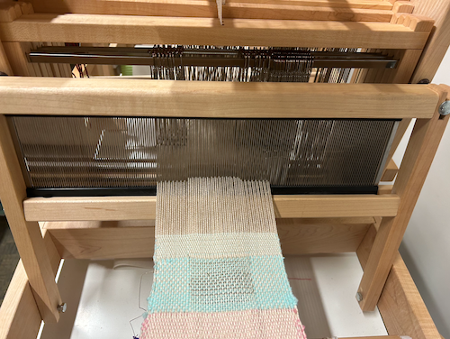
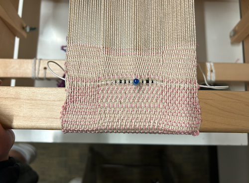

This assignment was completed on December 11, 2023
My goal for this weekly assignment was to experiment with the 8S-2 loom in the ATLAS equipment room and try to learn two layer weaving structures.
draft
The draft that I used for the 8S-2 was the draft that was posted as an example. I did this because this was my first time weaving two layer structures, and I wanted to follow the example to get it down.
set up
When starting to set up, first soldered an LED with two wires and checked that they had a connection. When getting ready to weave, I found some tension issues due to pockets that had been made previously with conductive felt. I worked through this, but it definitely cause some issues.
details
I had a lot of issues with my draft because for some reason I kept ending up with pockets on the side instead of in the middle. I tried to restart a couple times, but the same issue kept popping up. I inserted my LED in the middle as part of the draft.
final swatch
In the 2 hours, I put in a lot of effort to make the pocket work out. I have pockets, just not in the place I wanted them, so I need to spend extra time troubleshooting to figure out why my pockets ended up in the wrong place.
reflection
As a whole, the loom was not my favorite in comparison to the floor loom. I found the floor loom to be much more intuitive and fun to use, so I will try to work on there from now on. I would like to try the pocket again in the future as I think that two layer structures are really important to understand.